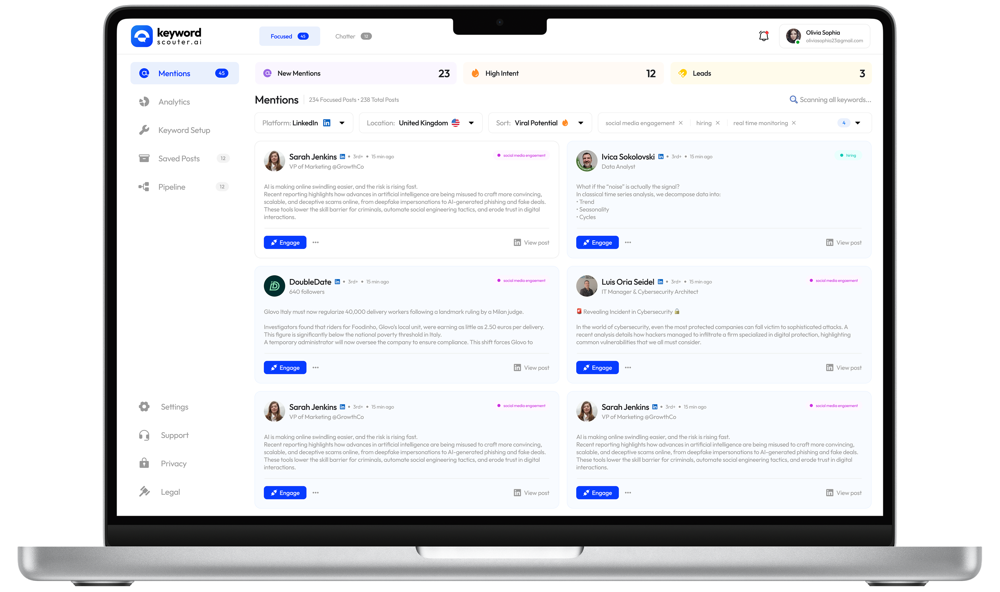
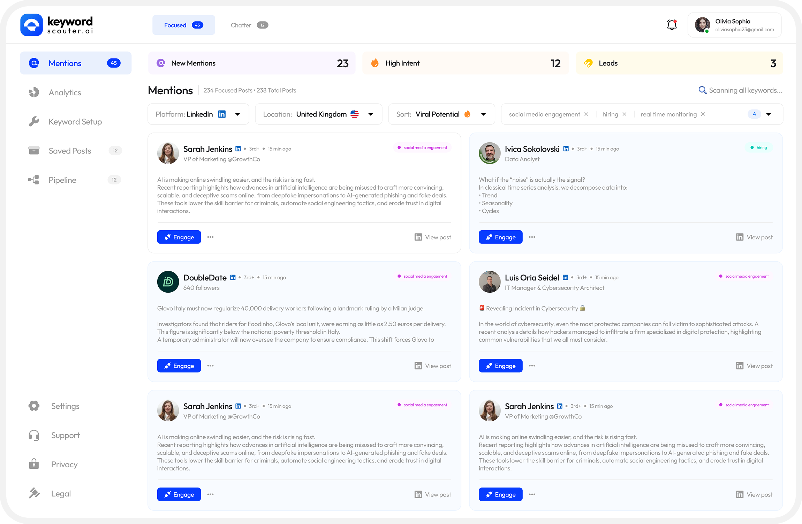
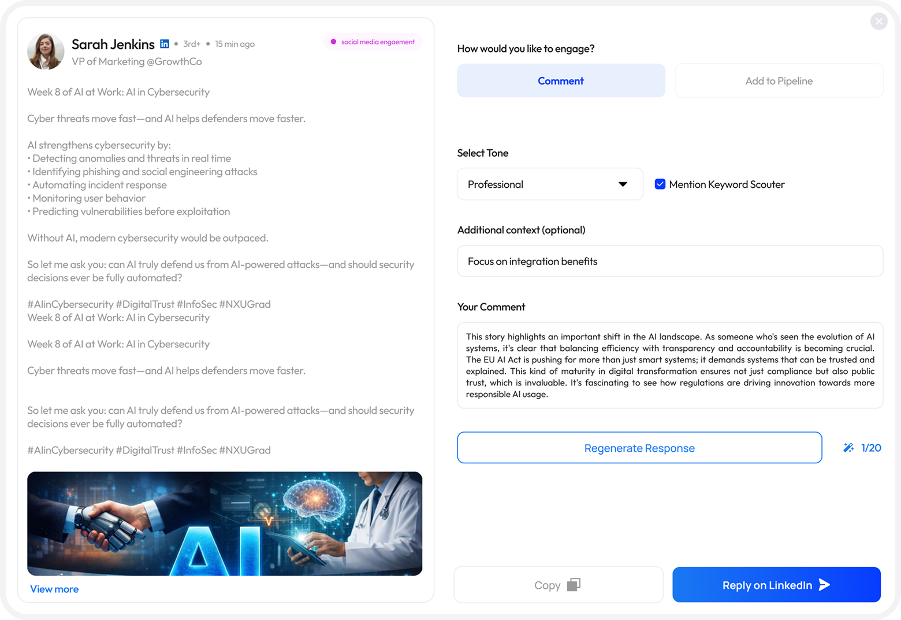
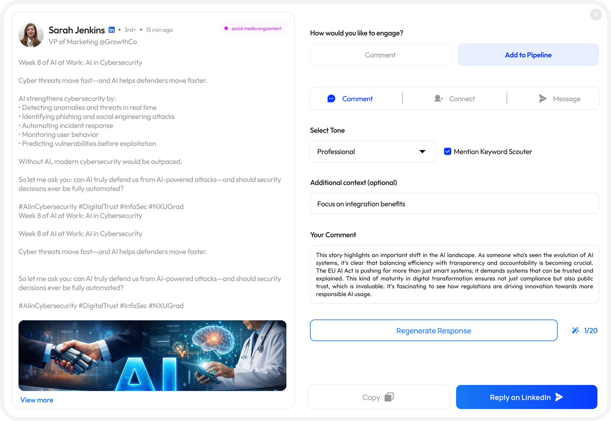
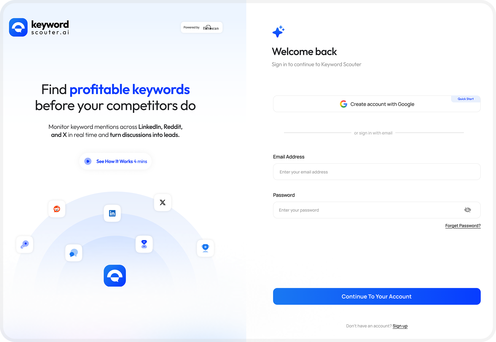
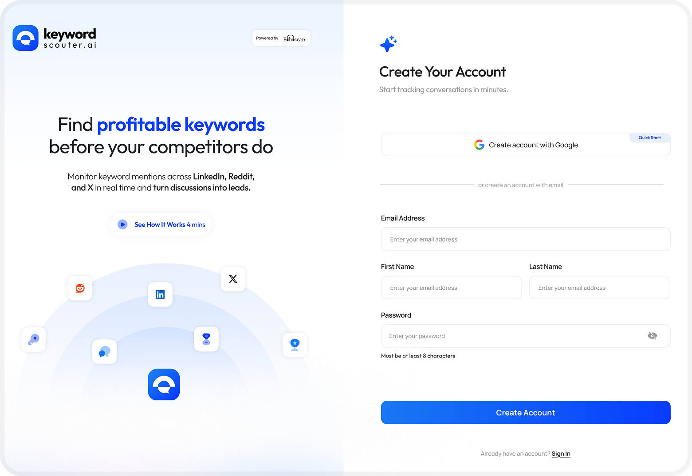
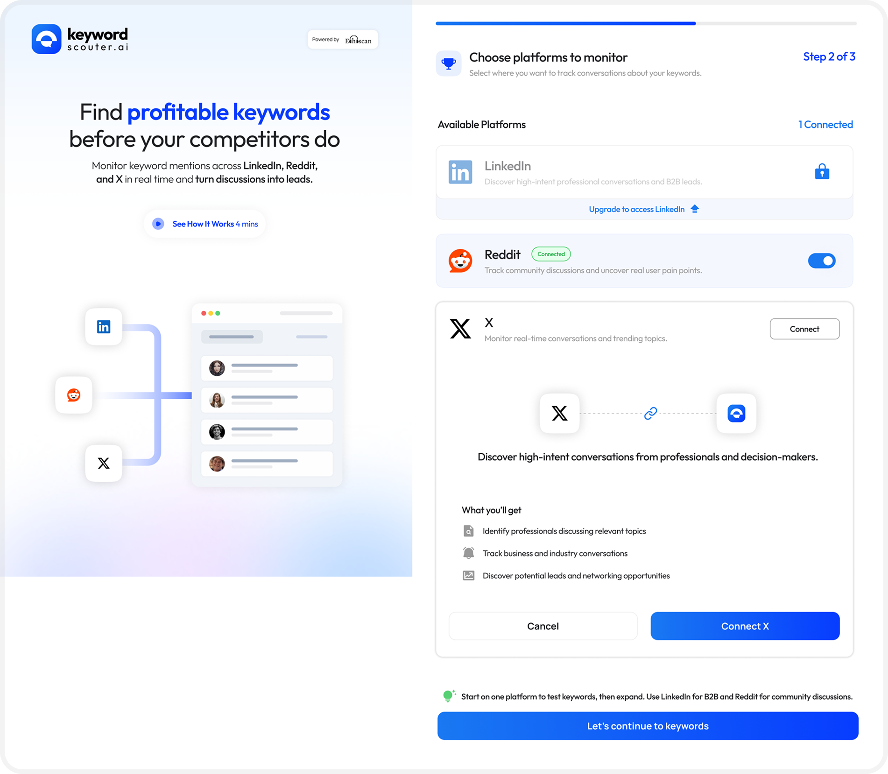
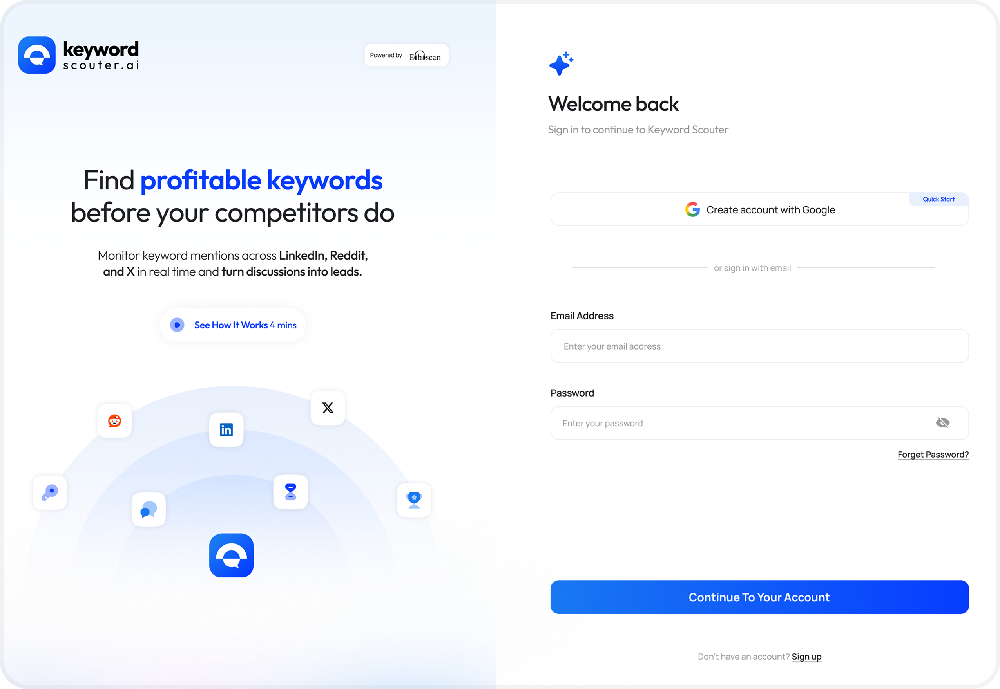
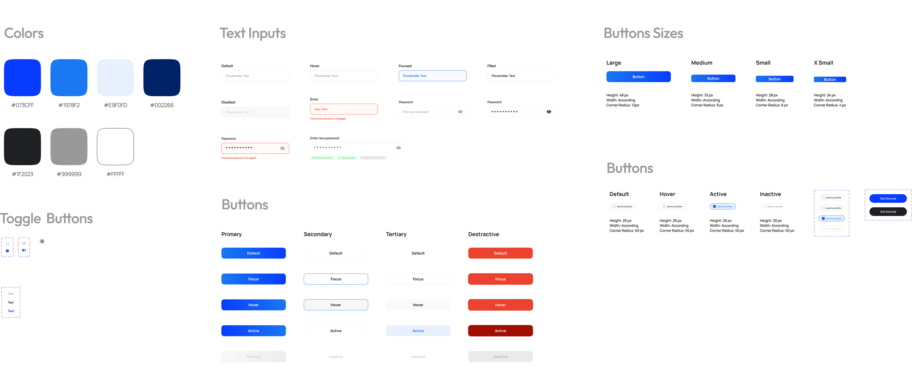

Redesigning Keyword Scouter's Chrome Extension Dashboard
From a cluttered social monitoring tool to a focused lead-generation engine — making it easier to find, evaluate, and engage with high-intent conversations.
From a cluttered social monitoring tool to a focused lead-generation engine — making it easier to find, evaluate, and engage with high-intent conversations.

Keyword Scouter helps teams find high-intent conversations across LinkedIn, Reddit, and X.
Keyword Scouter is a Chrome extension that monitors mentions of custom keywords across LinkedIn, Reddit, and X in real time. It helps growth marketers, founders, and sales teams discover high-intent conversations and turn them into leads before competitors do.
The product had strong core functionality — but the dashboard experience felt cluttered, the onboarding was heavy, and the engagement flow buried the most important actions. I took on the redesign challenge to simplify the interface while amplifying its lead-generation capabilities.
After studying the existing interface across all five screens, I identified clear patterns of friction that were reducing the speed and confidence with which users could act on opportunities.
The redesign focused on three key screens: the mentions feed, the engagement modal, and the onboarding setup flow. Here's a direct comparison of what changed and why.

High-intent leads surface first with a coloured left border. Stats are scannable at a glance.


All 3 engagement types visible as tabs. Tone is a pill selector. Response counter added for context.


| Area | Rejected approach | Chosen approach & rationale |
|---|---|---|
| Lead prioritisation | Separate "Leads" tab with its own feed | Inline amber left-border on high-intent cards in the main feed keeps context, avoids tab-switching. |
| Engagement entry | Full-page navigate to LinkedIn post | Modal overlay with in-app AI comment generation reduces context-switching and keeps the user in the tool. |
| Tone selection | Dropdown select element | Pill toggle group — faster to change, options are always visible, matches the fast-paced engagement context. |
| Onboarding length | Step-by-step screenshot guide for pinning | Single in-context nudge — users who need help can expand it, others aren't slowed down. |
| Stats display | Header counts only (small badges) | Full-width stat strip with New / High Intent / Leads creates a dashboard feel and communicates pipeline health instantly. |



The color palette centres on a soft indigo-blue — conveying intelligence and reliability without the coldness of pure blue. White and light-grey backgrounds create breathing room, while the accent blue draws attention exclusively to CTAs.
A modern geometric sans-serif for UI text (clean, fast readability) paired with heavier display weights for headlines. The type scale follows a clear hierarchy — no ambiguity between headings, subheadings, body, and labels.
The redesign focused on friction reduction and signal clarity. Based on UX heuristics and comparative benchmarks, the following improvements are expected from the updated flow.